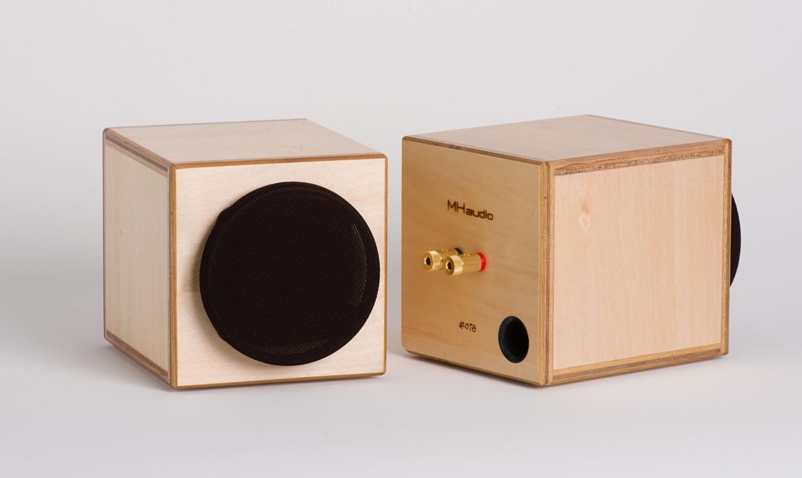
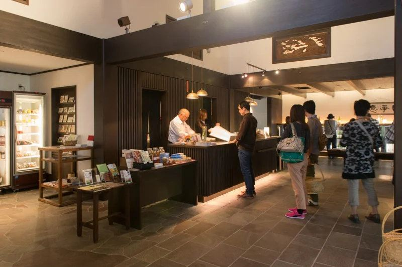
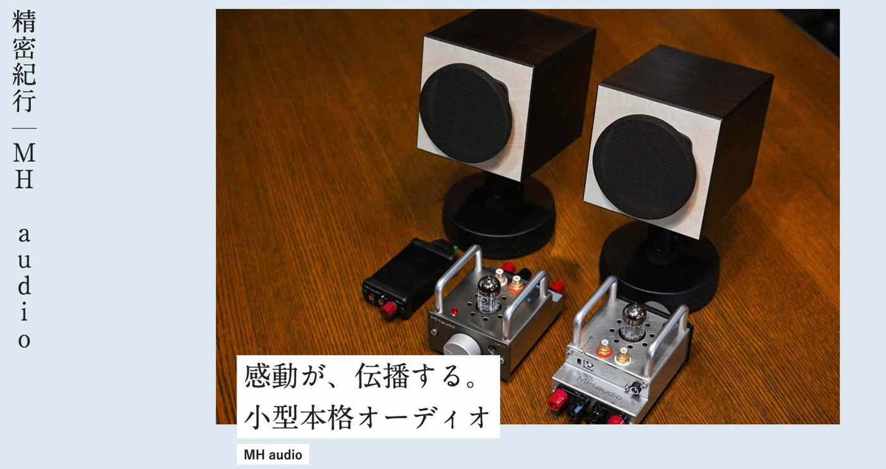
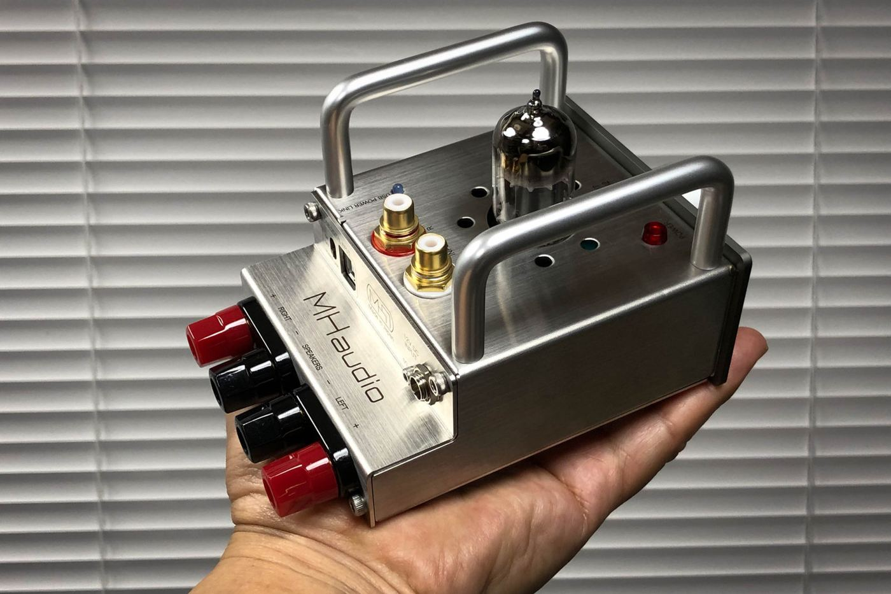
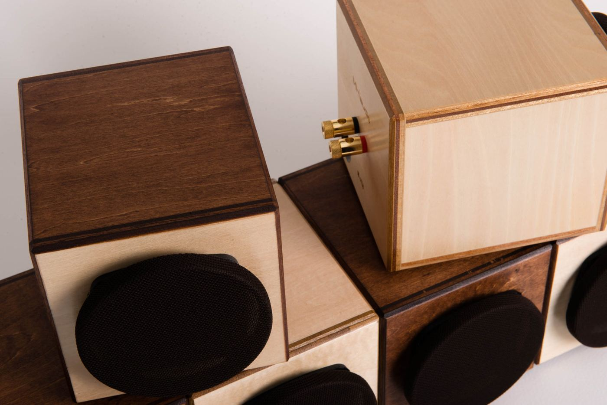
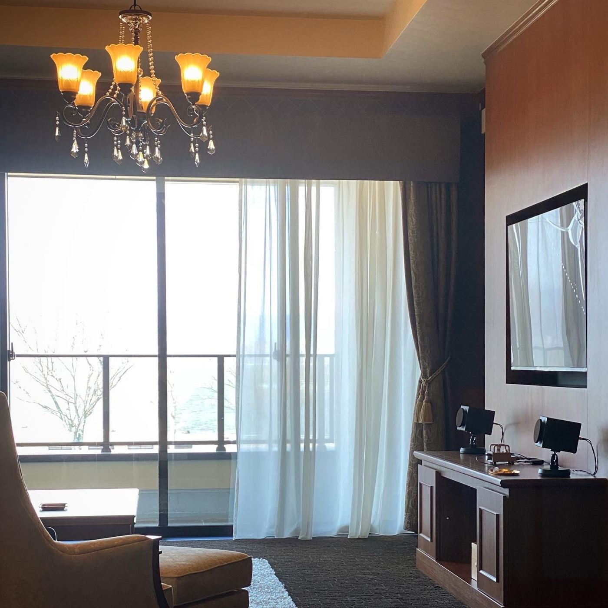

CDジャケットほどの大きさ一台ずつ手で仕上げ、背面に番号を入れています
小さな箱から、
本物の音。
MH audio
大きく重く、複雑なオーディオは
良い音がする…本当でしょうか？
MH audio は、CDジャケットほどのスピーカーと、
手のひらに乗るアンプを作っています。
ご自宅の机の上から、ホテルの客室、お店の天井まで。
目に見えない細部にこだわり、
小さくても音楽がきちんと届く音を目指しています。
使う場所から選ぶ
お店で流す音と、ご自宅で聴く音。入口を二つに分けました。


小さいのに、選ばれる理由
こんなに小さなスピーカーとアンプが、お店や放送局、音楽家の方に使われています。
大音量でなくても、よく聴こえる
音の立ち上がりと収まりが良く、小さな音でも輪郭がはっきり届きます。
会話を邪魔しない
耳障りな響きが少ないので、お店の会話やおもてなしの声の後ろで静かに鳴ります。
一日聴いても疲れない
木の箱が生む柔らかく自然な響き。朝から晩まで流すお店でも聴き疲れしません。
小さくて、場所を取らない
CDジャケットほどの大きさ。棚の上、カウンター、照明のレールにも置けます。
楽曲や音声が明瞭に聴こえ、かつ、耳障りで無く会話の邪魔にもならない。小型なのに低域もちゃんと出ているベイエフエム「bayfm78」様 エンジニアの方の感想（本社ロビーに設置）
お客様の事例 業種別索引
導入いただいた場所を、業種ごとに一覧にしました。気になる名前から詳しい記事へ進めます。
ホテル・宿 2件

全室に導入WAONリニューアルの計画段階からご相談をいただき、全ての客室に WAON のオーディオセットを置いていただきました。
2セット東京の小さな隠れ宿。間取り図でスピーカーの位置をご相談しながら納めました。
書店・美術館 2件

WAON六本木ヒルズけやき坂の「大人の蔦屋」。広い店内のBGMに WAON を使っていただいています。
WAONUA-1計画段階から音響のご相談をいただき、スピーカーと真空管アンプを導入いただきました。
酒蔵・パン・菓子 3件

WAON 4本130㎡ほどの蔵元ショップ。小さな音でも聴こえ、会話の邪魔にならないことでお選びいただきました。
WAON創業100年の老舗ベーカリー。本店のリニューアルに合わせて導入いただきました。
10年以上ご愛用売り場に加え、新しい工房と梱包出荷室にも置いていただきました。
飲食店・カフェ 3件

WAON 2ペアDA-1築200年の古民家。照明のレールと受付カウンターに、さりげなく設置しています。
WAONUA-1東京タロット美術館のミュージアムカフェ。計画段階からご相談をいただきました。
2セット移転を機にお選びいただき、取り付けた大工さんの分も、もう1セット納めました。
放送局 1件

WAON本社ロビーでオンエアの音声を流しています。壁の金具に WAON の底のネジで取り付けました。
このほかにも導入いただいた場所があります（全16件）。事例の一覧へ
評価と実績
賞、雑誌、ご愛用の方、試聴できるお店を一つの表にまとめました。
| 受賞AWARD | オーディオ銘機賞 2014 ヘッドホンアンプ HA-11 |
|---|---|
| 雑誌への掲載MEDIA |
|
| ご愛用の方USER | 指揮者 小林研一郎 様 |
| 取扱店SHOP |
|


製品
スピーカーとアンプ。組み合わせはご相談いただければ、使う場所に合わせてお選びします。
スピーカー

アコースティックスピーカー
WAON和音
CDジャケットほどの木の箱。茶色の部分は柿渋を重ねて仕上げています。
木の種類：竹（WAON-take）・ウォールナット（WAON-wn）
底のネジ穴で、壁や天井の金具、照明のレールにも付けられます。

マイクロモニタースピーカー
KION輝音
陶器の箱の、手のひらに乗る超小型。机の上やカウンターに。
在庫限り
アンプ

小型 真空管ハイブリッドアンプ
UA-1
大きく重く扱いの難しい真空管アンプの良さを、手のひらに乗る大きさに。

超小型デジタルアンプ
DA-1
手のひらサイズで 10W＋10W。WAON をしっかり鳴らします。黒と銀の2色。
ヘッドホンアンプ
読みもの
お店の音、ご自宅の音について、よくいただくご質問に答えます。
- 店舗のBGMスピーカーの選び方：会話を邪魔しない音とはお店
- カフェに合うスピーカー：小さくても店内に届く理由お店
- ホテルの客室に置くオーディオ：テレビの横に置ける本物の音ホテル
- デスクトップオーディオの始め方：スピーカーとアンプだけでいいご自宅
- 木製スピーカーの音はなぜ柔らかいのか音の話
- 小型の真空管アンプは寿命が短い？よくある心配に答えます音の話
※記事の題名は掲載内容イメージです
作り手と工房
長野県富士見町。ほぼ一人で作り、一人でお届けしています。



無意味な豪華さ、大きさ、
機能は要らない。
始まりは「好きな音楽を、ただ気持ちよく聴きたい」という想いでした。これまでのオーディオには無駄が多く、それが音を悪くしていると気づいたとき、音のことだけを考えた小さくシンプルなスピーカーとアンプを作ろうと決めました。
見かけの数値ではなく、心に届く音を。和にも洋にも、家庭にも仕事場にもなじむ形と質感を。
- 手作り
- 精密加工や家具の専門家の協力を得て、一台ずつ手で作ります。
- 仕上げ
- スピーカーの茶色は、柿渋を何度も重ねて出した色です。
- 長く使う
- 時代が変わっても、音楽を聴く道具として使い続けられることを大切にしています。
取扱店・ふるさと納税
実際の音は、お店で聴いていただけます。
試聴・購入できるお店
- 銀座 山野楽器 本店東京都中央区 銀座
- 代官山 蔦屋書店東京都渋谷区 代官山
- 二子玉川 蔦屋家電東京都世田谷区 二子玉川
展示の内容はお店によって異なります。お出かけ前にお問い合わせください。
ふるさと納税の返礼品
- 長野県 岡谷市オーディオセット ほか
- 長野県 富士見町オーディオセット ほか
返礼品の内容は各自治体のページでご確認ください。
まずはご相談ください
カートはありません。メールで使う場所をうかがってから、ご提案します。
- ご相談を送る置きたい場所、広さ、今お使いの機器を教えてください。
- 作り手からお返事場所に合うスピーカーの数とアンプの組み合わせをご提案します。
- お届け・設置のご相談ホテルやお店では、取り付け方法も一緒に考えます。
